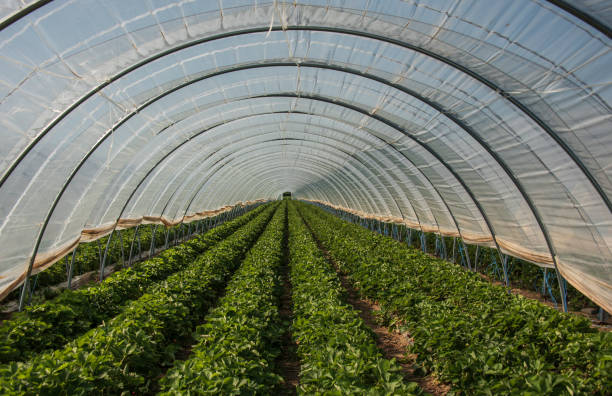

Demonstration Unit Gallery

Vermicompost Unit

Azolla Cultivation Tank

Drip Irrigation

Polyhouse Farming

Backyard Poultry

Goat Rearing Unit
Practical Learning Models for Sustainable Agriculture
The demonstration units serve as live models to showcase practical, sustainable, and innovative agricultural techniques. They help farmers, students, and agri-entrepreneurs learn through hands-on experience.
Vermicompost Unit
Azolla Cultivation Tank
Drip Irrigation
Polyhouse Farming
Backyard Poultry
Goat Rearing Unit